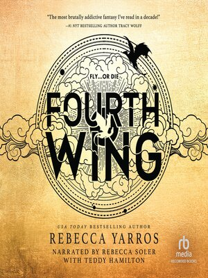
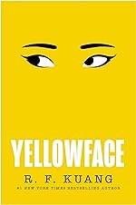

1.Fourth Wing
Fourth Wing by Rebecca Yarros. Violet Sorrengail enters a war college for dragon riders, ordered by the commanding general, AKA her mother. Violet must bond to a dragon, she doesn't think she will be bonded since dragons don't bond to "fragile" humans like her. With fewer dragons willing to bond than cadets, most would kill Violet to better their own chances of success. The rest would kill her just for being her mother’s daughter—like Xaden Riorson, the most powerful and ruthless wingleader in the Riders Quadrant. She'll need to give everything she's got to see the next sunrise. Everyday that passes, the war grows more deadly, the kingdom's protectve wards are failing and the death toll continues to rise.
2.Happy Place

Happy Place by Emily Henry. Harriet and Wyn were the perfect couple ever since they met in college. But they've broken up-and they haven't had the heart to tell their friends. Every year the friend group goes on a yearly getaway at the Maine cottage for a week of salty coastal air, cheese, wine and seafood with the people who understand them most. But the cottage is for sale this year which means it's their last year together in this place. So Harriet and Wyn decide to play the parts of boyfriend and girlfriend to avoid causing anymore pain. They thought it to be a flawless plan, but will it work in front of the people who know them the best.
3.Iron Flame

Iron Flame by Rebecca Yarros. It is the sequel to Fourth Wing. After Violet succeeded throgh her first year at college she continues to train. But with a new commander that seems to want to watch Violet fail the most, she knows she will be tested harder than before. She knows her body is weaker than the others, she also knows how much her wits can help her.
4.The Housemaid's Secret

The Housemaiden's Secret by Freidfa McFadden. Wilhelmina “Millie” Calloway struggles to find a job where the employer doesn't ask too many questions about her past. Then she meets Douglas Garricks who miraculously gives her a job as a housemaid, cleaning and cooking. It's almost perfect. But she finds it suspicious she's never seen Mrs.Garrick, or even seen inside the bedroom. Then one day she notices spots of blood around the neck of her white nightgown while doing laundry. Millie wants to know more. However, when she does it changes everything. She decides she needs to protect Mrs.Garrick, she wants Douglas to pay for what he's done, but how far is she willing to go?
5.Things We Hide From The Light

Things We Hide From The Light by Lucy Score. Nash Morgan, the chief of police who is recovering from being shot, but his Southern charm has been overshadowed by his panic attacks and nightmares. He feels like a shell of himself. But his new next-door neighbor, Lina sees his shadows. They have connection that they both feel. But Lina's filled with secrets of her own that, if Nash ever found out he would never forgive her. She doesn't want a long-term relationship but he's set on making her his.
6.None Of This Is True

None Of This Is True by Lisa Jewell. Alix Summers is out celebrating her forty-fifth birthday when she crosses paths with Josie Fair, who is also celebrating her birthday. Alix has a podcast which Josie has been listening to. Josie's life is strange, myterious and complicated whic Alix finds unsettling. Alix starts to realise Josie has been hiding some very dark secrets, and before she knows it, Josie has found her way in Alix's life and home. But as quickly as she arrived she disapeared. Alix then discovers that Josie has left a terrible and terriifyig legacy and that Alix has become the subject of her true-crime podcast.
7.Divine Rivals

After centuries of sleep, the gods are waring again. But eighteen year old Iris Winnow is just tryin to hold her family together. Her mother suffers from addiction and her brother is nowhere to be found. To try and calm her worries, Iris writes letters to her brother and slips them under her wardrobe door, where they disapear, right into the hands of Roman Kitt, her rival at work, the Oath Gazette. When he anonymously writes back, the two find themselves forging a connetion that will follow Iris all the way to the front lines of battle: for her brother, the fate of mankind and above all love.
8. Hello Beautiful

William Waters grew up in a household where his parents could barley look at him, much less love him. But when he earns a scholarship for his skills on the basketball court he moves far away to college. He meets Julia Padavano, a spirited and ambitious young woman who surprises William wih her appeciation of his quiet steadiness. With Julia comes along her family, she is inseperable from her three younger sisters: Sylvie, the dreamer, happiest wih her nose in a book imagines a different life path then the one of wife and mother, Cecelia, the familiy's artists, and Emeline who patiently takes care of all of them. The Pavadanos fold William into their loving and chaotic household. But then William's past resurfaces, jeoparizing not only Julia's plan for their furture but also her sister. Resulting in a catastrophic family rift that changes their lives for generations. Will the loyalty that once rooted them be strong enough to draw them back together when it matters most?
9.Love,Theoretically

By day, Elsie Hannaway is an adjunct professor, toiling away at grading labs and teaching thermodynamics. By other day, Elsie makes up for her non-existent paycheck by offering her services as a fake girlfriend, tapping into her expertly honed people pleasing skills to embody whichever version of herself the client needs. But then her carefully constructed life comes crashing downn. Because Jack Smith, the older brother of her favorite client, turns out to be the cold-hearted experimental physicist who ruined her mentor's career and undermined the reputation of theorists everywhere. And that same Jack now sits on the hiring committee at MIT, right between Elsie and her dream job.
10.Yellowface
Athena Liu is a literary darling and June Hayward is literally nobody. When Athena dies in a freak accident, June steals her unpublished manuscript and publishes it as her own, under the name Juniper Song. But evidence threatens June's stolen success, she'll discover exactly how far she will go to keep what she thinks she deserves.